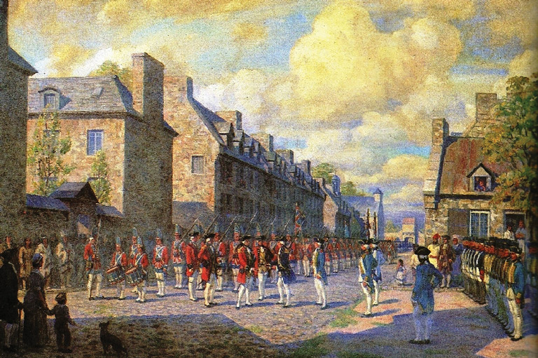
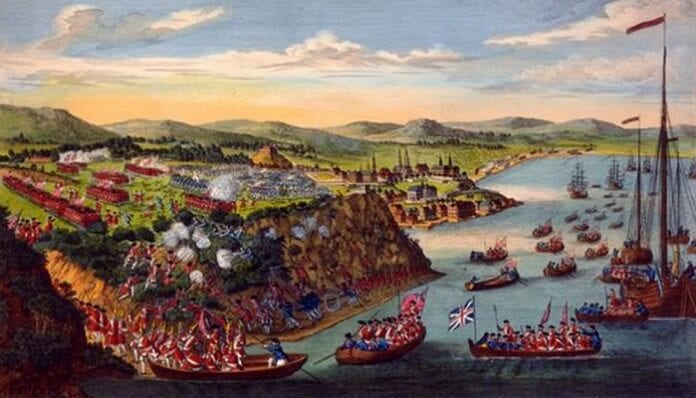

História
A história do Canadá é profundamente enraizada e abrangente, começando muito antes da chegada dos europeus.
Antes da colonização europeia, o vasto território do atual Canadá era habitado por diversos povos indígenas,
como os povos Inuit no Ártico, as Primeiras Nações nas regiões florestais e as tribos da Costa Noroeste. Essas
culturas desenvolveram sociedades complexas, baseadas na caça, pesca, agricultura e comércio, criando uma rica
tapeçaria cultural e econômica.
A exploração europeia iniciou-se no final do século XV, com os vikings na Terra Nova por volta do ano 1000 e,
posteriormente, com exploradores como Jacques Cartier no século XVI, que navegou pelo rio São Lourenço. Os franceses
estabeleceram colônias, como Québec, enquanto os britânicos se estabeleceram na costa leste, expandindo para as
Marítimas e a Baía de Hudson.
Os séculos XVII e XVIII testemunharam disputas intensas entre França e Grã-Bretanha pelo controle do Canadá,
culminando na Guerra dos Sete Anos. O Tratado de Paris de 1763 finalmente transferiu o controle francês ao Império Britânico,
estabelecendo a hegemonia britânica.
Em 1867, o Canadá se tornou uma confederação de províncias britânicas, marcando o início de sua formação como um estado moderno.
Ao longo dos anos, o país expandiu-se gradualmente para o oeste, incorporando novas províncias e territórios.
Os povos indígenas enfrentaram desafios significativos ao longo dos séculos, incluindo deslocamento de suas terras,
assimilação forçada e políticas de assimilação cultural. No século XX e XXI, houve um crescente reconhecimento dos
direitos indígenas e movimentos em direção à reconciliação.
O desenvolvimento político e econômico transformou o Canadá em um país industrializado no século XX, com uma economia
diversificada que inclui recursos naturais, manufatura, serviços e tecnologia avançada. O país estabeleceu um sistema
político estável e democrático, com uma forte identidade cultural marcada pela diversidade e pelo bilinguismo em inglês
e francês. As políticas de multiculturalismo são centrais para sua identidade nacional.
O Canadá mantém uma presença significativa nas relações internacionais como membro da Commonwealth, das Nações Unidas (ONU)
e da OTAN. Além disso, tem uma relação próxima com os Estados Unidos, seu principal parceiro comercial e aliado estratégico.
Hoje, o Canadá é reconhecido internacionalmente não apenas por sua qualidade de vida elevada, mas também por seus altos padrões de
direitos humanos, sua diversidade cultural vibrante e suas políticas progressistas em várias esferas.
Dados Gerais
Capital: Ottawa.
População: Aproximadamente 38 milhões de pessoas (estimativa de 2022).
Idiomas Oficiais: Inglês e Francês. O Canadá é oficialmente bilíngue, com o inglês sendo a língua mais falada, especialmente no oeste e centro do país, enquanto o francês é predominante em Quebec e em algumas partes do leste.
Economia: O Canadá possui uma economia diversificada, com destaque para recursos naturais como petróleo, gás natural, mineração e florestas. Além disso, o país tem uma forte indústria de manufatura e um setor de serviços desenvolvido.
Clima: Devido ao seu tamanho, o Canadá apresenta uma grande diversidade climática. As regiões do norte são frias durante a maior parte do ano, enquanto o sul experimenta verões quentes e invernos frios, com variações dependendo da localização e altitude.
Cultura: A cultura canadense é influenciada pela herança britânica e francesa, além das tradições indígenas das Primeiras Nações e culturas de imigrantes de todo o mundo. O Canadá valoriza a diversidade cultural e é conhecido por sua tolerância e multiculturalismo.
Educação: O sistema educacional é altamente valorizado no Canadá, com um forte compromisso com a educação pública e um alto nível de alfabetização. As universidades canadenses estão entre as melhores do mundo.
Saúde: O sistema de saúde é público e universal, garantindo cuidados médicos essenciais para todos os cidadãos e residentes permanentes.
Esses são apenas alguns aspectos gerais sobre o Canadá, um país que combina vastidão territorial, diversidade cultural e uma economia próspera.
|
|
|
|
|
|
|
|
|
|


|